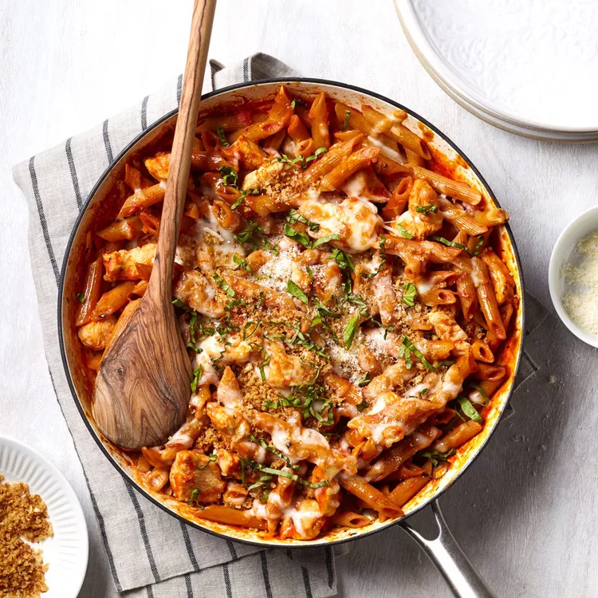

Chicken Parmesan Pasta

- 2 tbsp Extra-Virgin Oil
- 1/4 cup Whole-Wheat Panko breadcrumbs
- 1 tbsp and 1 tsp Minced Garlic
- 1 pound Chicken Breast
- 1 tbsp Italian Seasoning
- 1/4 teaspoon Salt
- 3 cups Low-Sodium Chicken Broth
- 1 1/2 cups Crushed Tomatoese
- 8 oz Whole-Wheat Penne
- 1/2 cup Shredded Mozzarella Cheese
- 1/4 cup Shredded Parmesan Cheese
- 1/4 cup Chopped Fresh Basil
- Heat 1 tablespoon oil in a large broiler-safe skillet over medium-high heat. Add panko and 1 teaspoon garlic. Cook, stirring, until the panko is golden brown, 1 to 2 minutes. Transfer to a small bowl and set aside. Wipe out the pan.
- Heat the remaining 1 tablespoon oil in the pan over medium-high heat. Add chicken, Italian seasoning, salt and the remaining 1 tablespoon garlic. Cook, stirring frequently, until the chicken is no longer pink on the outside, about 2 minutes. Add broth, tomatoes and penne. Bring to a boil and cook, uncovered, stirring frequently, until the penne is cooked and the sauce has reduced and thickened, 15 to 20 minutes.
- Meanwhile, position an oven rack in the upper third of the oven. Preheat the broiler to high. When the pasta is cooked, sprinkle mozzarella over the penne mixture. Place the pan under the broiler; broil until the mozzarella is bubbling and beginning to brown, about 1 minute. Top with the panko mixture, Parmesan and basil.